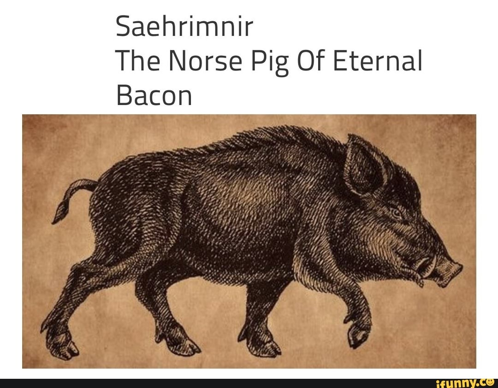

Sæhrímnir Stew

Sisyphus didn't feel so unlucky when he heard about this boar
This hearty stew is guaranteed to feed a heavenly hall of ghostly warriors nightly.
Ingredients
Steps
- Step 1: Slaughter Sæhrímnir.
- Step 2: Throw him into your cauldron Eldhrímnir.
- Step 3: Add whatever you have lying around and simmer over low heat for 6-8 hours.
- Step 4: Serve hot!